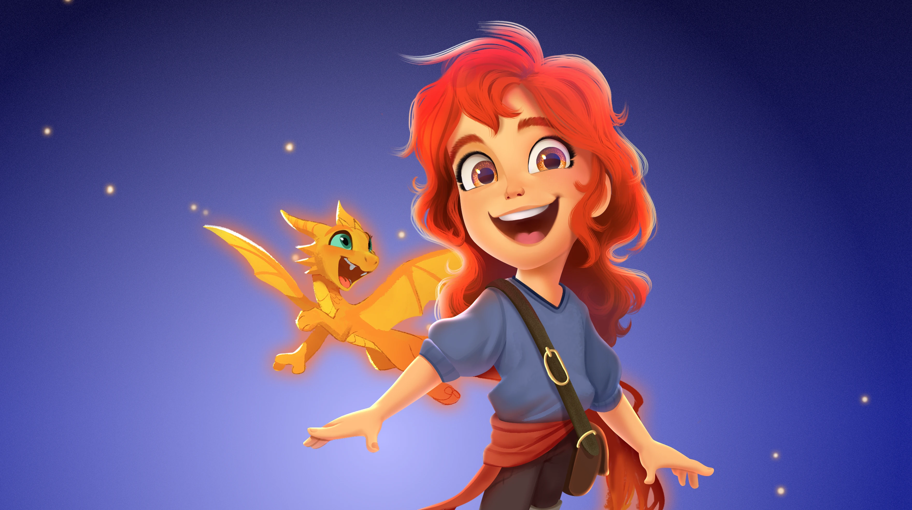
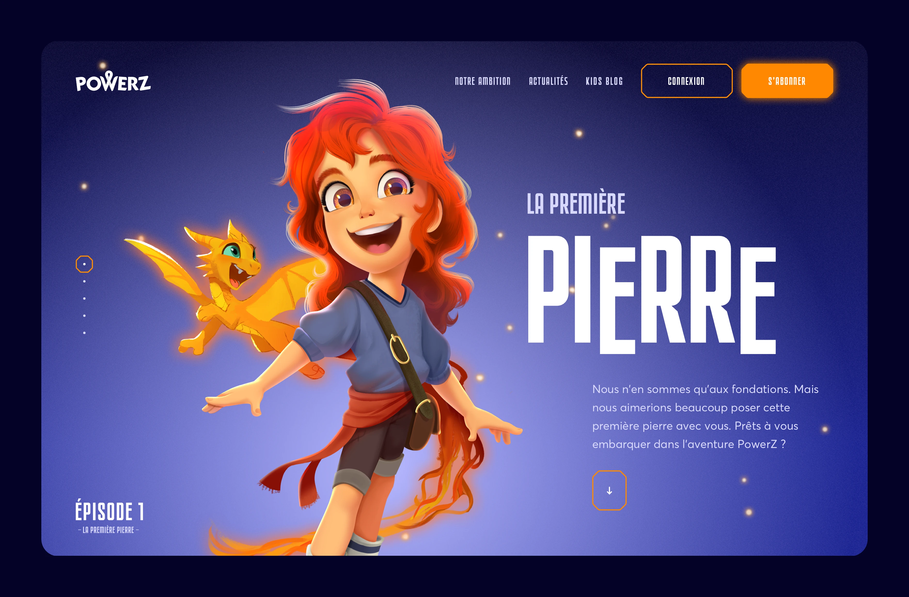
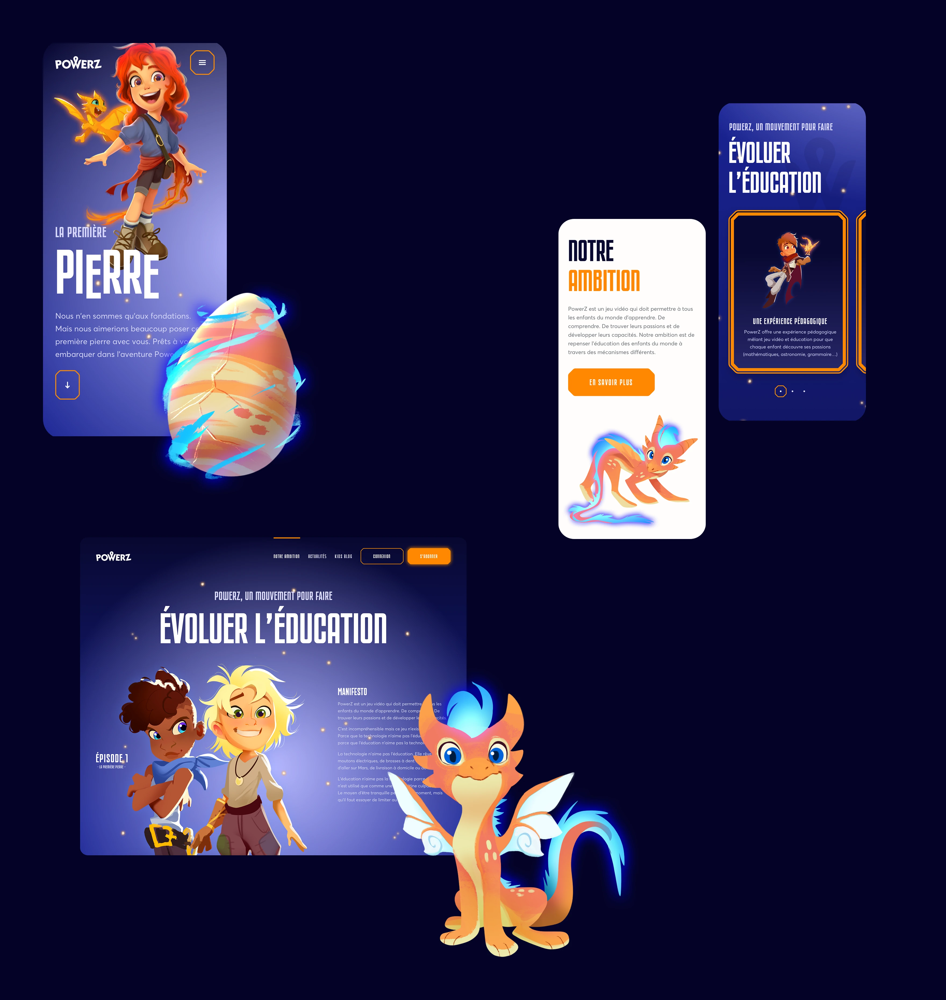
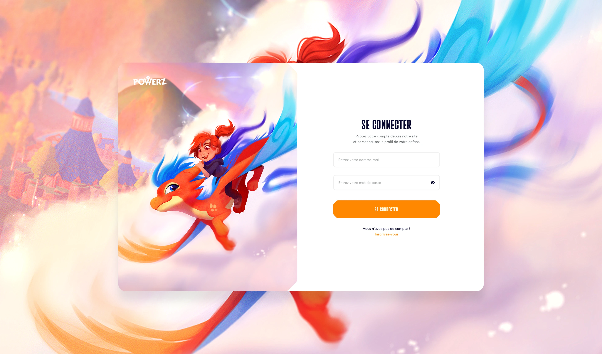
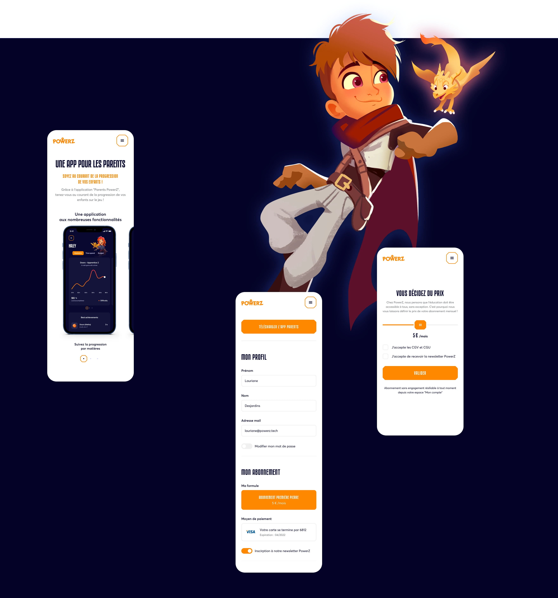
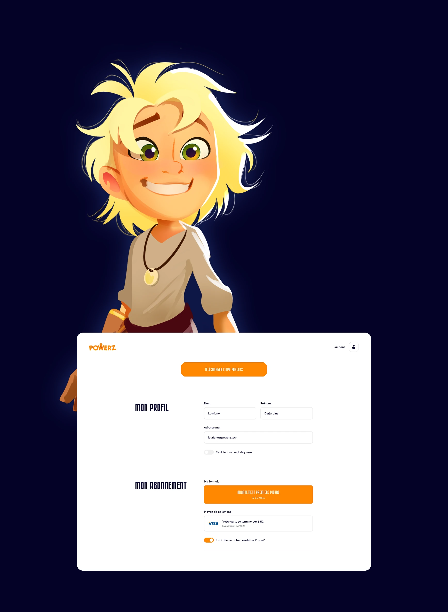
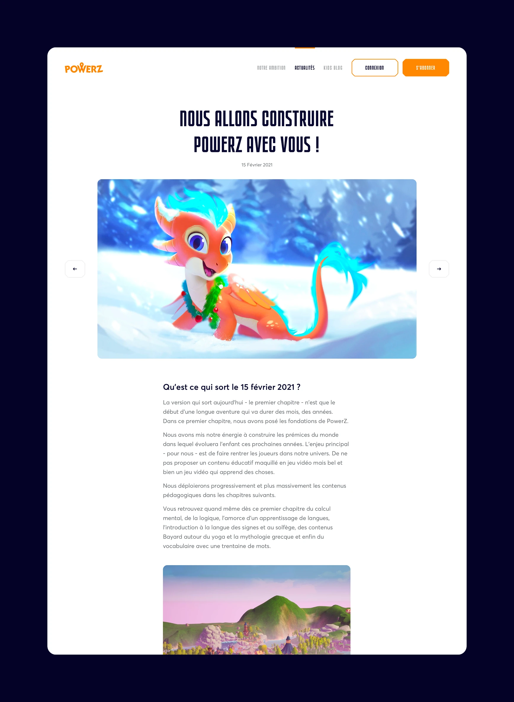
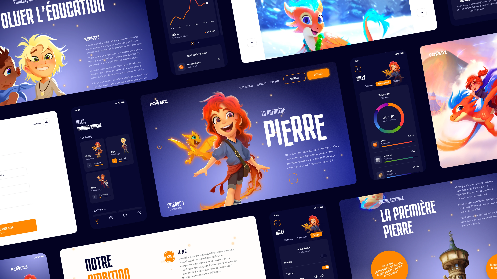
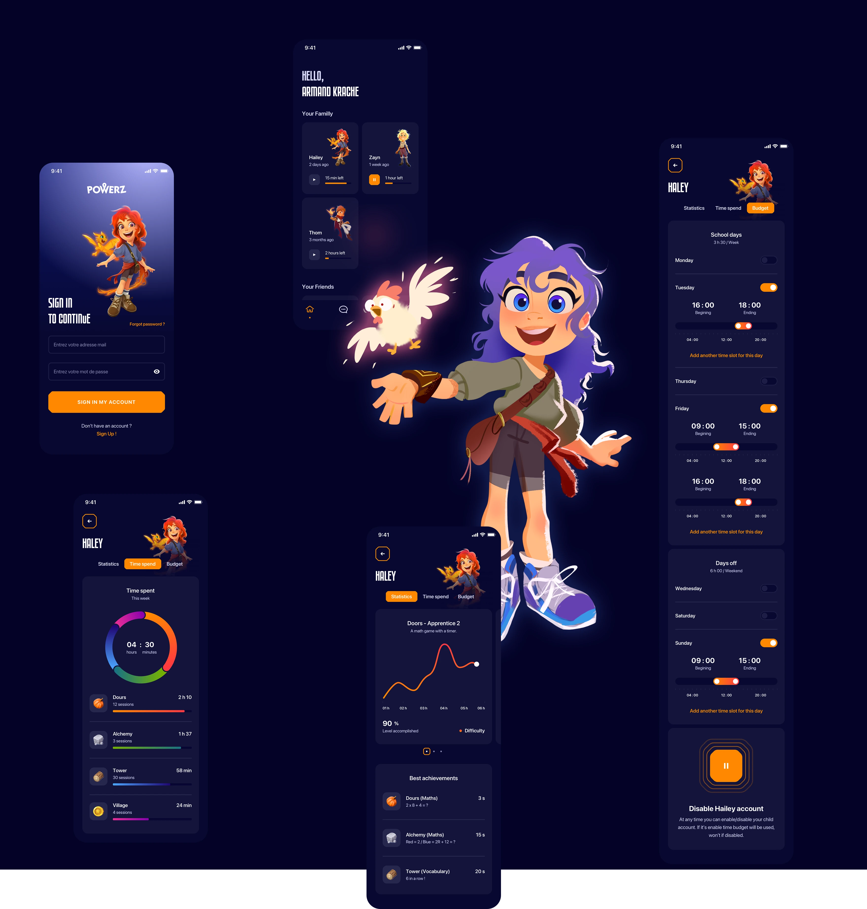

Power Z

January 2021
PowerZ offers an educational experience combining video games and education so that each child can discover their passions.
Children will be able to explore a caring world giving access to knowledge, in a fun and participatory way.
They will live an immersive and personalized experience, while being supported in their progress by parents.
It's incomprehensible but this game does not yet exist. Because technology doesn't like education. And because education doesn't like technology.
Technology doesn't like education. Technology dreams of electric sheep, talking toothbrushes, going to Mars, home delivery or robots.
Education doesn't like technology because the screen is only used as a super pacifier.
A way to be quiet for a while, but one that you have to try to limit as much as possible. Because if education shies away from technology, children like it. So what if we manage to make it useful?
The game is not the end of PowerZ, it is its development.
-
Co-founder & CEO
Emmanuel Freund
-
Co-founder & COO
Yann Carron de la Carrière
-
Co-Founder & CTO
Arnaud Lamy
-
Community & UX
Lauriane Desjardins







